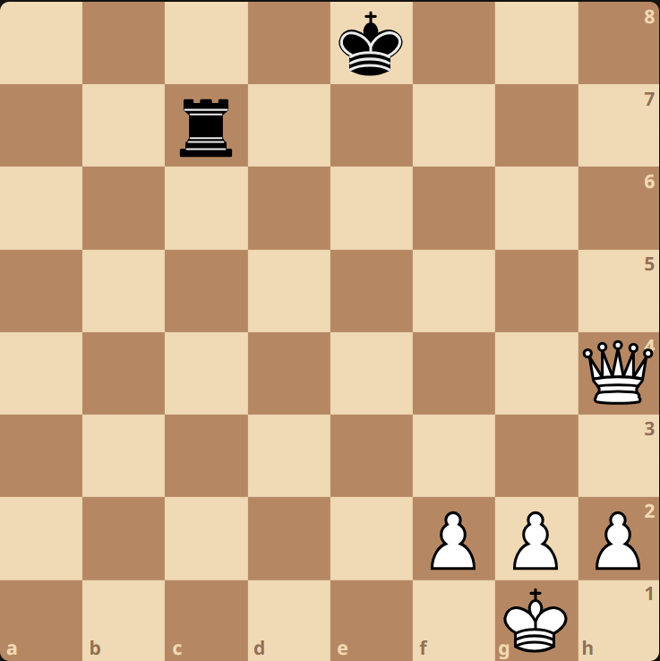

17/09/2024 Project Intro
Three years ago, I tried designing and writing a chess engine from scratch, which I nicknamed Engie. I went through a few iterations and frustrated restarts before I finally got a working model. Though did complete a prototype that could play against a beginner, but it was more than a little buggy.
I never really considered the project 'finished', and it's always bothered me, so I'd like to revisit it (hopefully now as a better developer), and make note of new development here. I'll be starting from scratch and try to update this whenever I can. I'm kicking this project off just as the new college year begins, so progress may be inconsistent.
I'll be writing in Python (despite how slow it is) and, to begin with, I'll try to rely as little as possible on external ideas and strategies for developing chess engines.
17/09/2024 Basic Idea
Chess engines basically follow a minimax algorithm, with a heuristic to evaluate positions after a certain depth is reached. The heuristic will generally be a simple enough function that primarily looks at the value of the pieces on the board, how well-placed they are, and each player's control of space on the board generally. It does not consider whether these pieces are vulnerable to attack. This can lead to the horizon problem. For instance, consider the board below:
 (Black to move)
A simple heuristic will judge that white is winning hugely simply because they have 12 points of value (queen=9, pawn=1) where black only has 5 (rook=5). However, black is in fact winning instantly with Rc1#.
While this example exaggerates the problem, it is likely to appear in less obvious ways, such as if the end of the tree search landed just before a piece was to be recaptured.
To address this, before applying the heuristic, we consider how 'volatile' the board's state is. If it's too volatile, we'll consider to expand the move tree until we reach simpler positions. This is known as quiescence.
Typical chess positions could have up to 30 legal moves, so the move tree can grow very quickly. Fortunately, there are some helpful way to cut this down:
- Transposition: The same moves played in a different order will generally result in the same position, so nodes in the tree can be merged. In chess this is known as transposition.
- Alpha-Beta Pruning: In a depth-first approach, very large portions of the tree can be pruned quickly once one line has been analysed.
- Iterative Deepening: Rather than going straight for the full-depth analysis, it may be worthwhile to begin with a lighter initial analysis to prune off any 'obviously' bad options.
- Allow Inconclusive Evaluations: Though this could potentially lead to inaccurate play, if one line of analysis results in a complex, volatile positions requiring length quiescence and analysis, the engine may be better served to simply rule it 'inconclusive' and treat it is a losing line to be avoided.
In fact, all of these are techniques humans use intuitively when analysing a game.
17/09/2024 Transposition Thoughts
Transposition seems like a simple way to cut down on analysis time. As a rough estimate, after 4 half-moves (two 'full moves' being two for white, two for black), there are four possible orderings of those four moves which all result in the same position. Therefore, there are only one quarter as many positions to analyse when duplicates are removed. At 6 half-moves, there would be 35 times more duplicates than uniques, and it scales dramatically from there (square of the factorial of the full move count). This analysis neglects the fact that certain move orderings may not be possible (if moves interfere with one another), but nonetheless demonstrates how important transposition is for speeding up analysis.
But there's a big problem with it. Consider two ways of starting a game:
Can you spot the difference between these two positions?
The pieces on the board may be identically placed, but the
history of positions are not - this is significant only for the rule of threefold repetition.
Yes, just because of that one rule, we have to store alongside each position a list of every previous position it has been in. Only positions which can be reached again are relevant for threefold repetition, so once an irreversible move is made, this list can be cleared. The irreversible moves are:
- Any pawn move
- Any capture
- Moving a rook or king in a manner that affects castling rights (including castling itself)
Fortunately the first two happen reasonably often in a typical game, which will help to mitigate this problem
I came up with a decent solution to this problem after some head-scratching, which is as follows:
- In minimax, nodes call a recursive tree search on each of their child nodes, each child returning an evaluation based on their recursive search. Normally this evaluation is a single number quantifying whether white or black is winning in that line.
- In my solution, the evaluation also has attached to to it a list of positions that are reached between the current node and the next irreversible move along the main line.
This way, when the transposing node come along and realises it shares its positions with a node previously analysed, it can simply check whether any of its past positions conflict with any of those in the evaluation's list. If it doesn't, the transposing node can safely reuse the original node's evaluation and return.
This approach also solves the 50-move-rule problem, whereby the transposing node simply checks that the move count till the next irreversible move will not cause their line to exceed 50.